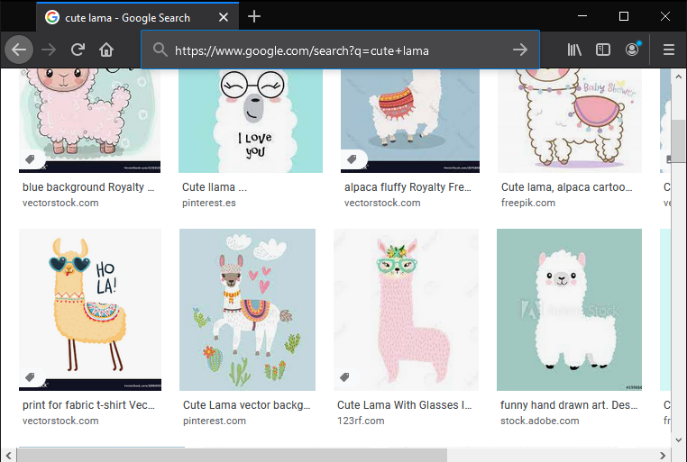
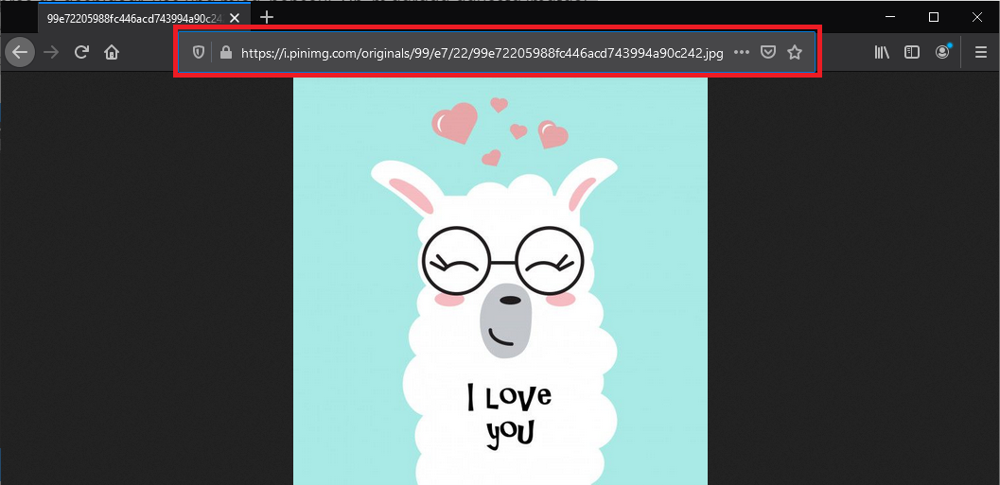

<meta charset="utf-8">
<meta name="viewport" content="width=device-width, initial-scale=1">
<script src="https://cdn.jsdelivr.net/npm/clipboard@2.0.6/dist/clipboard.min.js"></script>
<script type="module" src="/sofi/js/script.js"></script>
<link rel="stylesheet" href="/sofi/css/estil.css">


<header>
    <h1>Pràctica 1: WebApps</h1>

    <resum>En aquesta pràctica ens iniciarem amb les tecnologies que s'utilitzen per al desenvolupament
        d'aplicacions web.</resum>

</header>
<section>
    <h2>Tecnologies web són les diverses</h2>
    
    <p>Les tecnologies web són les diverses eines i tècniques que s’utilitzen en el procés de 
        comunicació entre diferents tipus de dispositius a través d’Internet.</p>

    <p>Per entendre millor aquest terme, dividim-lo en dos trossos: "web" i "tecnologia".</p>

    <p>La web, en aquest cas, fa referència a la World Wide Web, més coneguda com a WWW. 
        Va néixer per primera vegada el 1989 quan el famós científic i enginyer Tim Berners-Lee va 
        crear un mecanisme eficient per compartir recursos entre científics de tot el món.</p>
    
    
    <p>El concepte de web es pot explicar fàcilment amb l'ajut d'un exemple.</p>

    <p>Suposem que esteu buscant una imatge d’una bonica lama. Escriviu "www.google.com" al 
        navegador web. Introduïu "cute lama" a la barra de cerca i feu clic a la pestanya "Imatges". 
        Google us ofereix una gran quantitat d’imatges de llama recopilades de milions de fonts diferents.</p>
    
    
    
    <p>Després de desplaçar-vos una mica, penseu: "Oh, m'agrada aquesta imatge!" Però heu de 
        veure la imatge a mida completa abans de descarregar-la. Per tant, obriu la 
        imatge original i arribeu a aquesta pàgina:</p>
    
    

    <p>Fixeu-vos en el quadre vermell?</p>

    <p>Aquest és l’URL (un tipus d’identificador) d’aquesta imatge en particular. De la mateixa manera, 
        cada imatge de llama que visualitzeu tindria un URL diferent que ajudaria a localitzar 
        aquesta imatge a Internet.</p>

    <p>Totes aquestes pàgines web, documents i qualsevol altre recurs s’identifiquen i es localitzen 
        amb l’ajut dels seus URL. Aquests formen col·lectivament el que anomenem World Wide Web.</p>

    <p>El coneixement que acumuleu sobre el web i el seu funcionament s’ha d’aplicar per 
        donar-li un millor sentit. Per a això, heu de conèixer els conceptes bàsics d’algunes 
        tecnologies web habituals. Per tal d’entendre millor el web, fem una ullada a alguns 
        tipus bàsics i exemples de tecnologia web que s’utilitzen habitualment en aquest camp.</p>
</section>

<section>
    <h2>Quins Són Els Diferents Tipus De Tecnologies Web?</h2>

    <p>Com que tenim un espai limitat per examinar l'àmplia gamma de tecnologies web disponibles, 
        n'hem escollit algunes que s'utilitzen més sovint tant per a principiants com per experts 
        de la indústria. Els hem dividit en les seccions següents:</p>
    
    <ul>
        <li><p>Els conceptes bàsics, que tractaran els navegadors web i alguns fonaments 
            del desenvolupament d'aplicacions web</p></li>
        <li><p>Llenguatges i <em>frameworks</em> de programació que s’utilitzen en el desenvolupament de llocs web</p></li>
        <li><p>Bases de dades que s’utilitzen al fons per emmagatzemar les dades requerides o recollides pels llocs web</p></li>
        <li><p>Alguns protocols, és a dir, regles per comunicar-se a la web</p></li>
        <li><p>Elements gràfics, audiovisuals i altres elements multimèdia</p></li>
        <li><p>Alguns formats de dades que s’utilitzen normalment per transmetre dades per Internet</p></li>
        <li><p>Altres tecnologies web diverses</p></li>
    </ul>

    <p>Tot i que començarem amb els conceptes bàsics, la nostra discussió pot tenir una naturalesa 
        lleugerament més tècnica a mesura que avancem en l'article.</p>

    <p>Ara, anem a conèixer els detalls de cada component que hem enumerat.</p>
</section>

<section>
    <h2>Els bàsics</h2>
    <p>En aquesta secció, parlarem sobre navegadors web i alguns altres fonaments web.</p>

    <h3>Navegadors web</h3>
    <p>Els navegadors web, sovint només anomenats navegadors, permeten visualitzar tots 
        els recursos que formen part de la World Wide Web. Es basen en una arquitectura client-servidor. 
        El client és el navegador en aquest escenari. Podeu pensar en el servidor com una combinació de 
        programari i maquinari que rep les sol·licituds del client i, a continuació, envia el recurs 
        sol·licitat al client.</p>

    <p>Sempre que introduïu un URL a la barra d’adreces d’un navegador, transmet la vostra sol·licitud 
        al servidor i després obté i mostra tot allò que l’usuari ha sol·licitat.</p>

    <p>Alguns navegadors web populars són Opera, Mozilla Firefox, Google Chrome i Safari.</p>

    <h3>Frontend vs Backend</h3>
    <p>El desenvolupament web es refereix al procés de creació de llocs web. Aquest procés es 
        basa en diversos passos, que tractarem amb més detall quan explorem les eines que 
        intervenen en cada procés.</p>
    
    
    
</section>